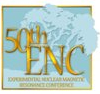
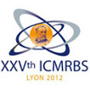

Events
Here is a list of events where relax was presented.
Posters
| 2004 ANZMAG | ||||
| The Australia and New Zealand society for Magnetic Resonance (ANZMAG) Conference, Barossa Valley, Australia. | ||||
| Presenter: Edward d'Auvergne | Abstract | Poster | ||
| 2006 ICMRBS | ||||
| XXIInd International Conference on Magnetic Resonance in Biological Systems (ICMRBS), Goettingen, Germany. | ||||
| Presenter: Edward d'Auvergne | Abstract | Poster | ||
| 2009 ENC | ||||
|  | 50th Experimental Nuclear Magnetic Resonance Conference (ENC), Asilomar, CA, USA. | |||
| Presenter: Edward d'Auvergne | Abstract | Poster | Poster files (figures and more) | |
| 2009 MOOT | ||||
| 22nd MOOT, Ottawa, ON, Canada. | ||||
| Presenter: Sébastien Morin | Poster | |||
| 2012 ICMRBS | ||||
|  | XXVth International Conference on Magnetic Resonance in Biological Systems (ICMRBS), Lyon, France. | |||
| Presenter: Edward d'Auvergne | Abstract | Poster | ||
Disclaimer
These documents may only be re-used with permission from the authors. All content is protected by copyright.